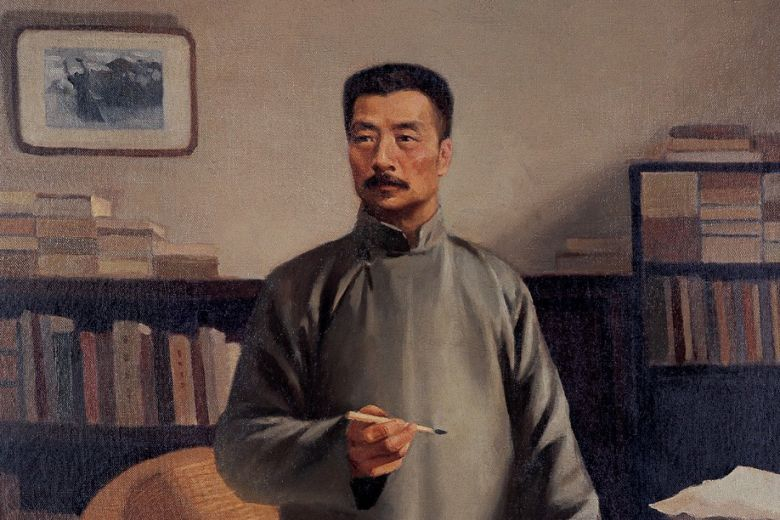

Lu Xun
The man who saved billion Chinese

Zhou Shuren, was a Chinese writer, essayist, poet, and literary
critic.
Here's a time line of Lu Xun's Life
-
1881 -- Lu Xun was born in Shaoxing, Zhejiang. As
was common in premodern China, Lu Xun had many names.
-
1899 -- Lu Xun half-heartedly participated in one
civil service examination
-
1909Lu intended to study in Germany, but did not
have sufficient funds, and was forced to return home
- 1899
-
1899Lu moved his family from Shaoxing to a large
compound in Beijing,[12] where he lived with his mother, his two
brothers, and their Japanese wives
- 1936Died
"asdf"
asdf
If you have time, you should read more about this incredible human being on his Wikipedia entry